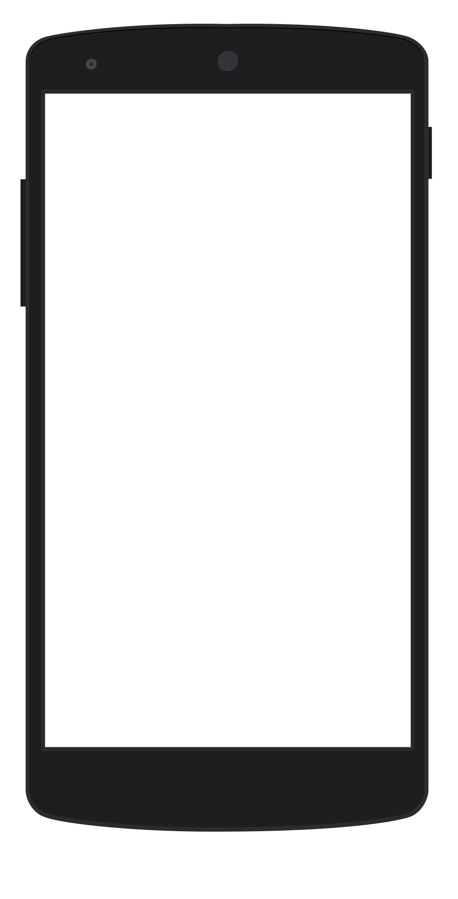

This little demo shows the basics of how the touchscreen in your phone works.
Built with some friends at Google as part of their Nat + Lo episode about what's inside a phone. Check out the video if you want to know more about what's going on here.
Made with WebGL and the Web Audio API. Source on Github.
Oops
Sorry for the tech trouble. For the best experience, view in the Chrome browser on your phone or laptop.